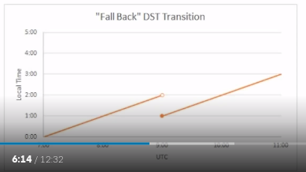

Date and Time Fundamentals
All the notes here are from Matt Johnson's course in PluralSight on Date and Time fundamentals.
The Human Problem
- Clocks and calendars are human devices.
- Humans tend to think about time locally.
- Julius Caesar created Julian Calender.
- Pope Gergory XIII created Gergorian
calender.
- This is the most commonly used calender in the world.
- Changes made to how leap years are determined.
- Ommitted 10 days from October. So basically October 5th, 1582 didn't exist. More details in the wikipedia page.
- Other calenders: Hebrew, Buddhism, Islamic etc.
- ISO-8601 - International Standards for Date and Time.
- This is what most computer systems follow.
- It also defines the calender system as Proleptic Gregorian Calender. It's also called as ISO calender.
Universal Time
- Single global point of reference. No Time Zones.
- Synchronized via Network Time Protocol (NTP)
- The first basis for a Universal time was GMT or Greenwich Mean Time.
- Since 1847.
- UTC = Coordinated Universal Time
- Happened in 1972
- Preferred modern reference point
- Primary difference between UTC and GMT:
- GMT has a civil definition.
- UTC has scientific definition. UTC also uses atomic clocks.
- UTC also has leap seconds.
- These are one second periods that are added to the time scale to keep it perfectly in sync with another time scale called UT1.
- Both UTC and UT1 are intended to stay in sync with earth's rotation.
- UTC is measured by atomic clocks.
- UT1 is measured by observing astronomical phenomenon.
- Because they aren't always in sync, we get leap seconds.
- GMT or UTC ?
- There isn't much difference between then in modern times.
- In modern times, GMT is kept perfectly in sync with UTC. And hence the difference between them doesn't matter.
- Use UTC when:
- As a timekeeping system
- As the reference point for a time zone offset. (UTC-07:00)
- Use GMT:
- As part of the UK's time zone (GMT/BST)
- Civil purpose
Daylight Saving Time
- Government mandated clock adjustments.
- Usually the clock is advanced forward by an hour in the spring, and is retracted backwards by an hour in the fall.
- Also known as "Summer time".
- Does not occur in every time zone.
- Not applied the same way in every year. There is no guarantee that it's going to be the same in future years.
Spring Forward Transition
- Local time advances forward
- Usually by 1 hour

- Creates a "gap" of missing local time.

Fall Back Transition
- Local time rewinds backwards
- Usually by 1 hour

- Creates an "overlap" of ambiguous local time.
- 
Software recommendation: If you are going to record value in terms of local time, then you must also include the offset from UTC so that during the overlap you can distinguish between the two possible instances.
https://www.timeanddate.com/ is a good reference to learn more details.
Context Matter
- In software, make sure to preserve context using better types.
- Some context for date and time:
- UTC for DateTime
- DateTimeOffset instead of storing local time.
Formatting
- Use 4 digit year in formatting to avoid confusion.
- ISO-8601 standard provides format for unambiguos interpretation. (MM/DD/YY vs DD/MM/YY)
- ISO-8601 recommendation
- Simple Format (YYYY-MM-DD)
Scope
- Date and Time
- Example:
2013-12-31 22:00:00 - Suitable for event time. Eg: Application log, Date of comment
- Example:
- Date
- Example:
2013-12-31 - Suitable for just dates. Eg: Birthdate
- Example:
- Time Of Day
- Example:
10:00:00 PM - AM/PM is called meridiem. It's a latin word meaning midday.
- AM stands for ante meridiem or before midday.
- PM stands for post meridiem or after midday.
- Use cases: Businss hours
- Example:
- Elapsed Time
- Example: 33 hours, 15 minutes etc.
- Use case: Duration of Activity.
- Imperfect Time Period
- Example: 1 year, 3 months, 10 days etc.
- Use case: Estimate, Scheduling
Perspective
- Unspecified Perspective
- Example
2013-12-31 10:00:00 - Could be local time, but we should avoid making such assumptions.
- It could be useful for "floating times". Could refer to 10'o clock local time for anytime zone. (Useful for television show broadcast). It's time value doesn't change when you use it in other time zone.
- Example
- Universal Perspective
- Example
2013-12-31 16:00:00 UTC - Instead of
UTCabove, it's also specified asGMTor marked by a letterZwhich stands for Zulu time. Zulu time is just a military way of specifying GMT. - It's completely unambiguos. Represents a fixed moment of time regardless of any time zones.
- Example
- Local Perspective (Sibi: Todo - Go through the video again)
- By Offset (
2013-12-31 22:00:00 -06:00)- Offset to UTC is mentioned
- By Time Zone (
2013-12-31 22:00:00 Central)- Good to know background information about Central Time.
- By Time Zone Segment (
2013-12-31 22:00:00 CST)- CST: Central Standard time
- Recommendation: Avoid time zone abbreviations when storing inside computer. (Fine to show it in UI, but not recommended otherwise)
- By Time Zone & Offset
- Example
2013-12-31 22:00:00 -06:00 Central
- Example
- By Offset (
Calender Time
- It's a position on a calender or a clock.
- Use cases:
- Future scheduled events. It's best to use this instead of UTC timestamp because your events might run at wrong time after a Daylight saving transition.
Instantaneous Time
- Can use date and time in UTC to refer to a particular instant.
- Use cases:
- Recording past events
- Future Absolute Events
- Calculations
- Adding or subtracing time
- Determining duration between them
- Recommendation: If you are planning to perform computation in date time, best to convert to UTC before performing them.
Time Zones
What is a Time Zone
- A Time Zone is a Geographic Region.
- Follows the same local clock.
- Abides by the same set of timekeeping rules.
- Usually determined by Law.
- A Time Zone is NOT an offset.
- Offsets are only a part of a time zone.
- More than one offset might apply, at different parts of the year.
- Defines the configuration of local clocks.
- Covers all time within the region.
- Has a common or legal name. Eg: IST
- Has a standard offset from UTC.
- Includes Daylight Saving Time Rules.
- Transition Date patterns.
- Transition Times
- Transition Amount (1 hour etc)
- Includes History of Changes (like git!)
- DST Rules
- Offsets
- Alignments: that occur by each time zone transitioning by a fractional amount to line up with UTC. (Alignments are offset changes but done with the intention of aligning with UTC)
- Time Zones are set by Governments.
- Expect Suprises and Oddities.
- Changes Occur Often
- Reason for Time Zone Changes
- Trade/Commerce
- Religious Observations
Time Zone Fallacies
The below mentioned points are false. Reasoning is explained on why they are false:
- Time zone is a numeric offset from UTC.
- Many time zones share offsets.
- Even though some time zones may carry the same offset at some point, the way they use that offset is very different. So a time zone is much more than simply being a numeric offset from UTC.
- Time zone names and abbreviations are unique.
- Counterexample: IST
- Israel Stanard Time - UTC+02:00
- India Standard Time - UTC+05:300
- Irish Standard Time - UTC+01:00
- Counterexample: IST
- Local people know their time zone and how to abbreviate it.
- Counterexample: Hawaii
- According to Government: HAST - Hawaii Aleutian Stanard Time
- According to People: HST - Hawaiian Stanard Time
- Counterexample: Hawaii
- An entire state follows the same rules for daylight saving times
- Counterexample: Part of Arizona
- Outside of USA, if I know what country a person is in, I can
determine their time zone.
- Counterexample: Brazil
- Time zones will never change, so I only have to think about them
when I first build my application.
- Recommendation:
- Do not assume UTC offset of future calender dates.
- Keep your Time Zone Data updated.
- Use a Time Zone Database.
- Recommendation:
- There can only be two daylight saving time transitions in any given year. Counterexample: Egypt
The IANA Time Zone Database
- IANA: Internet Assigned Numbers Authority
- Known by sereral names
- IANA
- Olson
- TZDB
- TZ
- ZoneInfo
- Identifier Format: Area/Location
- Examples:
- America/NewYork
- America/Indiana/Knox
- Examples:
- Historical accurancy at least since 1970.
- Data in this database doesn't come from IANA, but it's community maintained. It's frequently updated.
Microsoft Time Zone Database
- Built in to Windows operating system.
- Maintained by Microsoft, not a stanard body or community.
- Zones are sometimes poorly defined.
- Very limited historical data.
- Strange Zone Identifiers.
- Recommendation: Avoid this and use IANA database
The Unicode CLDR
- Not a time zone database.
- Source of data for localized translations.
- Time Zone Names
- Dates, Times, Numbers, Currency and much more.
- Contains "MetaZones"
- Groups of Time Zones that can span countries.
- Contains Translations of Windows Zones to IANA Zones.
Rails Time Zones
- Ruby on Rails has it's own time zones.
- Uses the same IANA time zone database.
- Limited subset of 146 "meaningful" zones.
- Poorly defined criteria
POSIX Time Zones
- POSIX = Portable Operating System Interface
- You'll see POSIX time zones in C/C++ applications.
- Examples:
- PST8PDT: In Pacific Stanard time the offset is 8 and when daylight saving time occurs, we will call it as Pacific Daylight time.
- EST5EDT4,M3.2.0/02:00,M11.1.0/02:00
- Cryptic, Error Prone
- Limited to 2 transitions per year
- Contains only current rules
- Recommendation: Do not use. Treat as deprecated.
- GNU C library contains many time zone functions that will work with IANA database.
- Other alternatives: ICU4C
- Do not use Boost time zone APIs.
Date and Time Formats
ISO 8601 "Extended" Format
- YYYY-MM-DD
- Single digit number aren't allowed. So a number start with zero if it's a single digit number.
- HH:MM:SS
- SS is optional.
- 24 hour clock.
- HH:MM:SS.ffffff
- Stanards doen't represent the number of decimal places.
- Can use comma instead of dot in decimal space.
- HH:MM:SS.ffffffZ
- UTC
- HH:MM:SS.ffffffZ[+/-]HH
- HH:MM:SS.ffffffZ[+/-]HH:MM
- YYYY-MM-DDTHH:MM:SS
- Use "T" to combine date and time.
- YYYY-MM-DDTHH:MM:SS.ffffff
- YYYY-MM-DDTHH:MM:SS.ffffffZ
- YYYY-MM-DDTHH:MM:SS.ffffffZ[+/-]HH
- YYYY-MM-DDTHH:MM:SS.ffffffZ[+/-]HH:MM
ISO 8601 "Basic" Format
- Same as extended format but with most of the separation characters removed.
- YYYYMMDD
- HHMMSS
- HHMMSS.ffffff
- HHMMSS.ffffffZ
- HHMMSS.ffffffZ[+/-]HH
- HHMMSS.ffffffZ[+/-]HHMM
- YYYYMMDDTHHMMSS
- YYYYMMDDTHHMMSSffffff
- YYYYMMDDTHHMMSSffffffZ
- YYYYMMDDTHHMMSSffffffZ[+/-]HH
- YYYYMMDDTHHMMSSffffffZ[+/-]HHMM
- Treat them as strings instead of integers.
RFC 3339
- Examples:
- 2013-12-31T01:23:45.123Z (date and time at UTC)
- 2013-12-31T01:23:45.123+05:30 (date and time with an offset)
- Good way to think that RFC 3339 is a subset of ISO-8601 extended format.
- This RFC is specifically for timestamps.
- Date and time are both required.
- Seconds are required, decimals are optional.
- UTC ("Z") or Offsets is required.
- All punctuation is required (
T,:) - Midnight is always
00:00:00~
- Allows for negative zero offset (-00:00)
- UTC is known, but implies an
Unknown Local Offset
- UTC is known, but implies an
RFC 822/1123
- Originated in RFC 822 and modified in RFC 1123.
- Examples:
- Tue, 31 Dec 2013 01:23:45 GMT
- Tue 31 Dec 2013 01:23:45 GMT+0530
- Tue 31 Dec 2013 01:23:45 EST (Not a good idea)
- Used in HTTP headers.
- Used by JavaScript, but being phased out.
- Limitations:
- No fractional seconds.
- English Abbreviations only.
- Poor use of Time Zone Abbreviations.
- Extraneous Day of Week
Unix Time
- Integer Timestamp.
- Seconds since Janaury 1st 1970 UTC
- Or in milliseconds.
- Also known (erroneously) as Epoch time.
- The world Epoch just means the date that you are basing something on which in this case is Janaury 1st 1970 UTC.
- Advantages: Simple numerical storage, Easy for mathematics.
- Disadvantages: Not human readable, Does not account for time zones or leap seconds.
- Recommendation: Good internal format, but don't expose externally.
- For Rest services, use ISO 8601 Format.
OLE Automation Dates
- Object linking and Embedding.
- Early stanard from Microsoft.
- Used in Microsoft Office and COM.
- Floating Point Number.
- Whole and fractional standard days.
- Ambiguous Epoch.
- Usually Dec 30th, 1899
- Sometimes Dec 31st, 1899
- Unspecified reference (not necessarily UTC or local time). Left to the application.
- Recommendations
- Limit usage to COM interop scenarios.
Time Span Format
- No standard
- Similar to Time of Day, but for Elapsed time
- HH:MM:SS.fffffff
ISO 8601 Duration Formats
- Uses
- Calender based periods
- Elapsed duration of time
- Computed Values
- Examples:
- P3Y: Period of 3 years.
- P5M: 5 months
- P8W: 8 weeks
- P15D: 15 calender days
- Elapsed time periods
- PT36H: 36 hours
- Extra capital T
- PT90M: 90 minutes
- PT2S: 2 seconds
- PT36H: 36 hours
- Compound Value examples
- P3Y5M8W15DT36H90M2.576S
- T in middle, separates date and minutes.
- P3Y5M8W15DT36H90M2.576S
JSON Date Formats
- JSON = JavaScript Object Notation
- Does not define a date format.
- Options:
- ISO 8601 Extended Format
- Unix time
- ASP.NET Format
- Example:
/Date(1388453025123)/ - The number is Unix time in milliseconds.
- Created by Microsoft.
- Example:
- Recommendation: Use ISO 8601 Format
XML Date formats
- XML does not define a date format.
- XSD uses the ISO 8601 Extended format.
- Types:
- xsd:date
- xsd:time
- xsd:dateTime
- xsd:duration
Common Mistakes and Best Practices
Understand the Context
- Date + Time vs Date Only
- Time of Day vs Elasped Time
- Elapsed Duration vs Calenderic Period
Understanding Time Zone
- Time Zone != Offset
- Without referencing a point in time, you cannot know offset is in effect in a given time zone.
- Time zone abbreviations are often ambiguous.
- Time Zones change.
Calculating Durations
- 10 AM - 1 AM = 9 hours ? Right
- Not always! Could be 8 hours or 10 hours.
- Avoid calculating in local time.
- Use UTC for calculations.
- 12:00Z - 03:00Z = 9 hours
- Alternatively, include an offset.
- 10:00-02-01:00-02 = 9 hours
- 10:00-01-01:00-02 = 8 hours
- 10:00-02-01:00-01 = 10 hours
Logging
- If you're logging in local time, then it can be lead to problem.
- Local time values are not unique.
- Consequence:
- Spikes and dips in statistics/aggregations.
- Error coordinating activities from different time zones.
- Instead:
- Log timestamps in UTC.
- Alternatively, log in local time and include an offset.
Server's Time Zone
- Don't Use the Server's Time Zone
- Server side code should not depend on the server's time zone.
- Users can be in different time zones.
- An administrator might change the server's time zone.
- Recommendation: Store data in UTC, or as DateTimeOffset.
Database Data Types
- Date and Time values should never be stored as strings (Eg: CHAR, VARCHAR etc) in a database.
- SQL Server
- DATETIME2, DATETIME, SMALLDATETIME
- DATETIMEOFFSET
- DATE
- TIME (time-of-day)
- Caution: TIMESTAMP is not a date/time type
- MySQL
- TIMESTAMP (Best to avoid)
- DATETIME
- TIME (elapsed time)
- YEAR (Recommendation: Use integer field instead)
- Recommendation: To store UTC values, just store them in DATETIME field.
- PostgreSQL
- TIMESTAMP: Stores date and time without any time zone information at all.
- TIMESTAMP WITH TIME ZONE: Normalizes the value to UTC and converts back to session's time zone on retrieval. Best to avoid this.
- DATE: Date only values.
- TIME (time-of-day)
- TIME WITH TIME ZONE: Stores time of day with offset.
- INTERVAL: Can use to store elapsed times or calendrical periods.
- Recommendation: To store UTC values, use TIMESTAMP type.
Working with Ranges
- Date + Time Ranges should be treated as half open intervals
- [Start, end)
- Duration calculation: end - start
- Value Comparison: (start <= value AND end > value)
- Date ranges should be treated as fully closed intervals.
- [start, end]
- Duration calculation: end - start + 1
- Value comparison: (start <= value AND end >= value)
- Time ranges should be treated as half open intervals
- [start, end)
- Duration calculation:
- start <= end ? end - start : end - start + 24 hours
- Value Comparion
- start <= end ? (start <= value AND end > value) : (start <= value OR end > value)
Scheduling Future Events
- Record the time for the events.
- Future time should be record in Local time, not UTC (Goes
against the normal advice!). Reasons:
- Daylight Saving Time: Time zones change their offset periodically for DST. If you schedule a daily event at a particular time, then the event should fire at the same time every day.
- Time zone rules can change.
- Future time should be record in Local time, not UTC (Goes
against the normal advice!). Reasons:
- Record the time zone associated with the event.
- Project UTC or DateTimeOffset value for next occurence.
- Revise projections whenever updating time zone data.
- Establish rules for dealing with DST gaps and overlays.
- Example of running a cron job at 6:00 AM Pacific Time
- Save in Database: "Daily", "06:00", "America/LosAngeles"
- Daily is not same as "every 24 hours". Because not all days have 24 hours due to Daylight saving time transitions.
- Project next occurences.